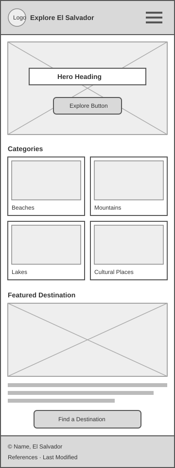
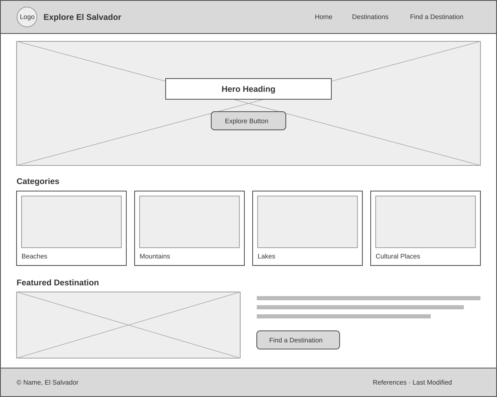

Site Name
The site name (along with a logo) is the main identifier of the website and is important for branding and recognition.
Explore El Salvador
I chose this name because it says exactly what the site is about and invites people to discover the country. It is short and easy to remember.
Site Purpose
The site purpose describes the scope of the site and the information and services it will provide.
The site introduces visitors to tourist destinations in El Salvador, with information about beaches, mountains, lakes, and cultural places organized by category, along with a form to help users find a destination based on their preferences.
Scenarios
Scenarios are questions that a visitor from the target audience might ask. The website content will answer these questions.
- What are the best beaches to visit in El Salvador?
- Which destinations can I visit if I like mountains and cooler weather?
- What cultural or historical places should I see during my trip?
Color Schema
These colors are inspired by the flag of El Salvador, its beaches, and its mountains.
- Blue #0F47AF - header, footer, and headings
- Dark Navy #1B2A41 - paragraph text
- Green #2E7D4F - accents, links, and buttons
- Sand #F6EFE3 - page background
- White #FFFFFF - text on blue and section backgrounds
Typography
I will use two Google Fonts:
Montserrat - used for headings, navigation, and buttons.
Open Sans - used for paragraphs, lists, and the form.
Wireframes
These wireframes show the layout of the home page in mobile and desktop views.
Mobile View

Desktop View
